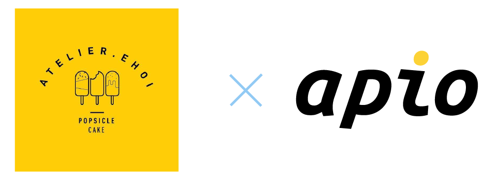
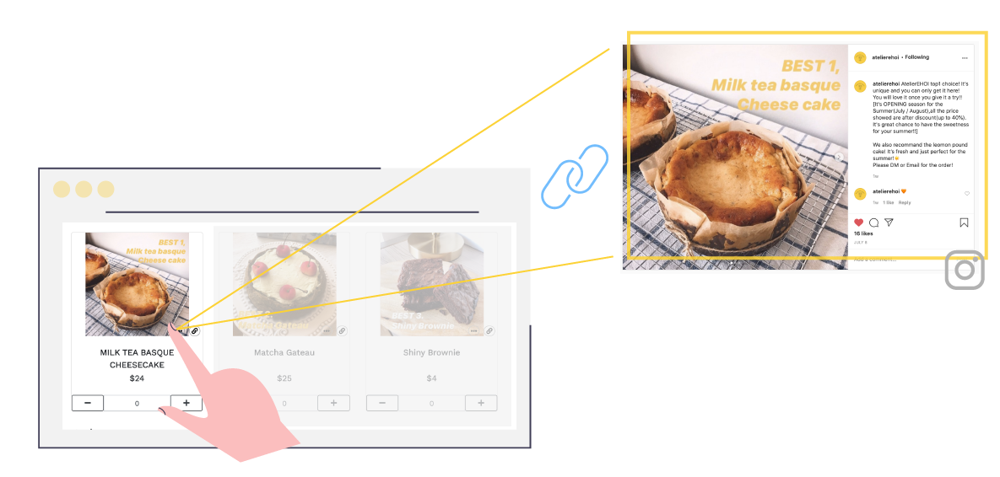
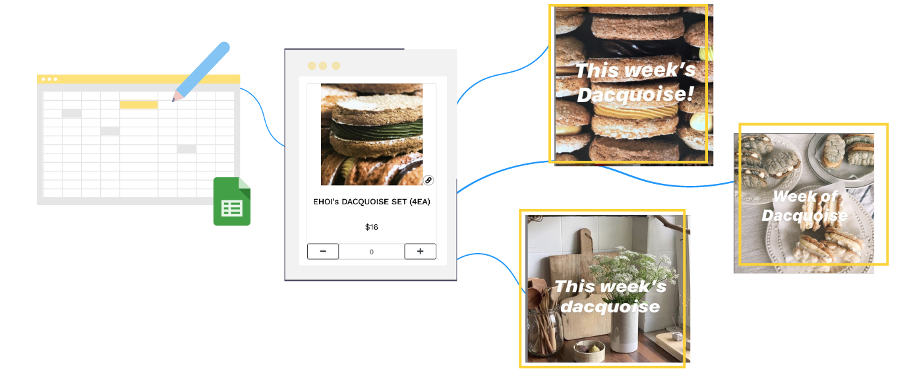
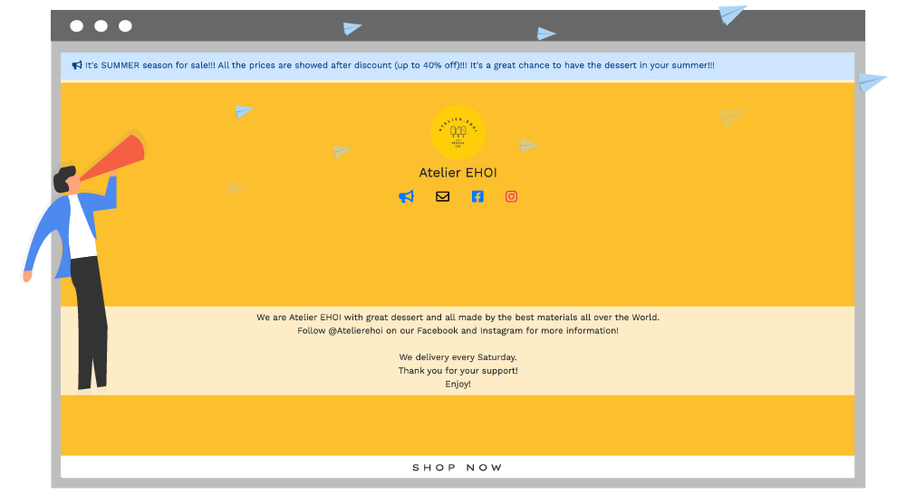
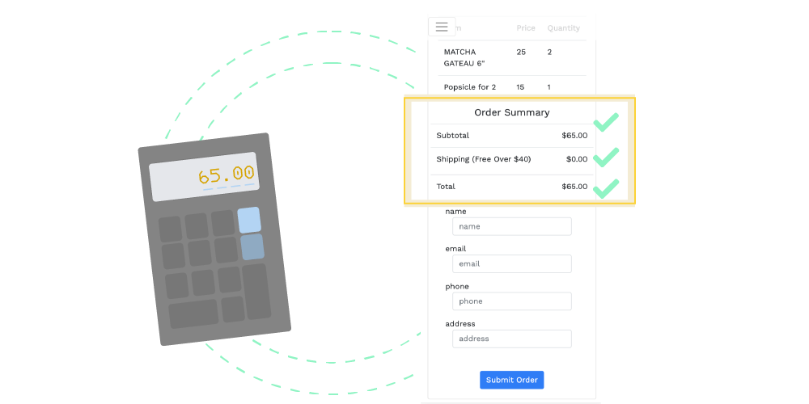

2020-07-20 • 3 min read
The first step to start an online business is to create a website. This involves getting a domain, hiring developers, creating contents and more. That’s a lot of work and investment before you can even put your products online. Many small business owners turn to social media (mostly Facebook and Instagram) to build up their brand. It’s free, easy, and most people are already familiar with these platforms. Our online store creator Chopin shares these benefits and can join forces with Instagram to help you create an online store with your Instagram posts.
🛍️Read more: why you don't need to hire developers now.
Chopin by apio is a lightweight static online store generator. You can create and manage your store with just google sheets.
🛍️Read more: more awesome features you can add to your Chopin site!
🛍️Read more: follow this guide and create your store today!

Atelier EHOI is a boutique bakery in the New York/New Jersey area. They already established presence on Facebook and Instagram. Prior to using Chopin, they were collecting orders through google form which makes the transition seamless, as they are already familiar with google products.
The website is very convenient for our customers to place orders. After taking a while to set it up, it is very easy to manage the website. We like the fact that we can change contents like basic setting, product description and picture anytime we want. And I believe the website will benefit our business.
With Chopin, all product information including name, price, description, image, etc. is stored in a google sheet. Atelier EHOI is able to extract URLs from their previous images and posts on Instagram, and use them as product links and images on their Chopin site. This way, they save time and energy by re-purposing the social content created already and don’t have to craft new content for the online store.

Atelier EHOI features a weekly Dacquoise menu. They announce the secret flavors one week prior to the order deadline. With Chopin, they can update the cake flavor every week by simply updating a few cells in google sheet. This streamlines the menu update process for store owners and make it easier for customers to explore their weekly menu.

During summer, Atelier EHOI runs a special campaign with a 40% discount. They are able to inform customers with price deduction at the top of their website to boost online sales.

No more manual calculation. With Chopin, all customers’ orders are summed and applied with free shipping rule. No need to pull out the old calculator anymore!

Atelier EHOI is a perfect example of how simple tool integration can smooth online business operations. The onboarding process took only a couple days. There’s no need to learn a monstrous platform or different tools. Just plug in Instagram contents that you’ve already created to start an online store.
Are you still using google form, email, or DM to collect orders? Try Chopin for free today!
Happy Selling! 💰